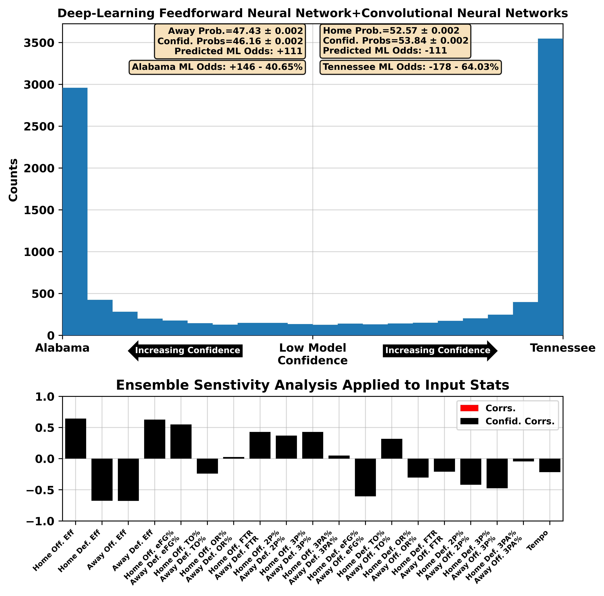
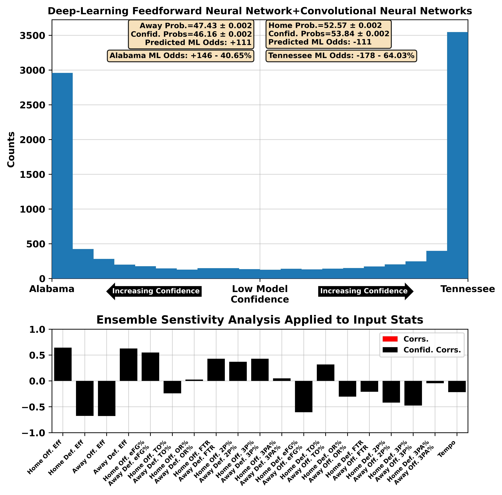
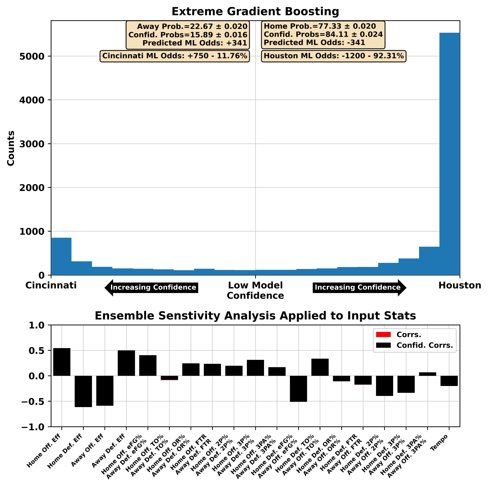
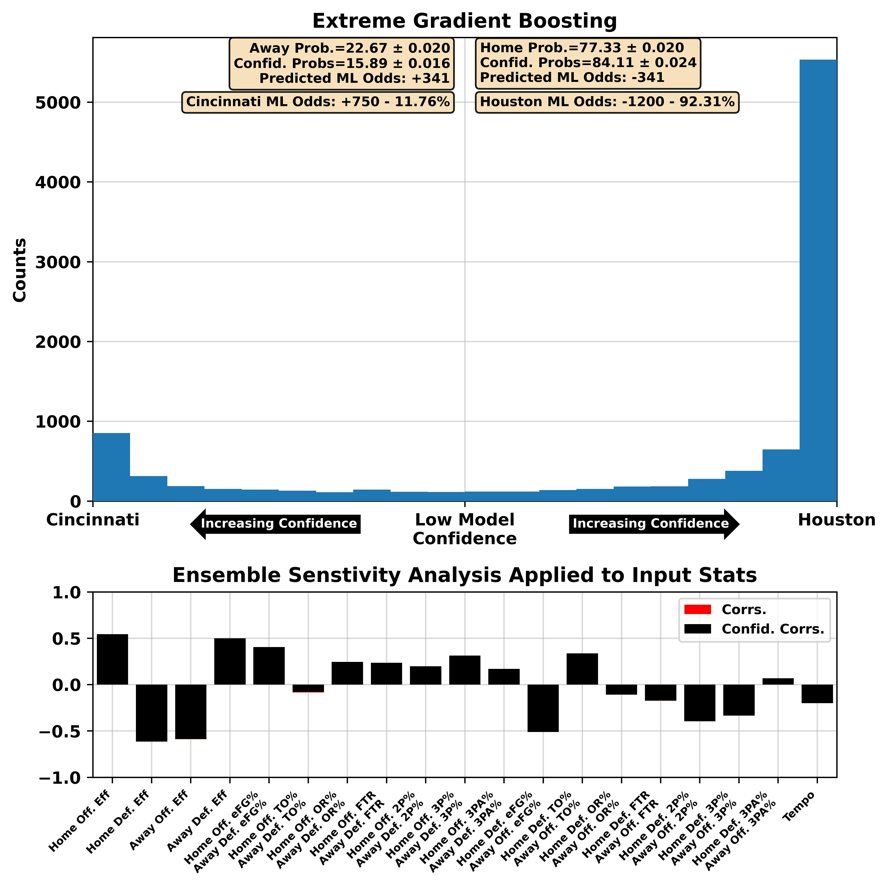
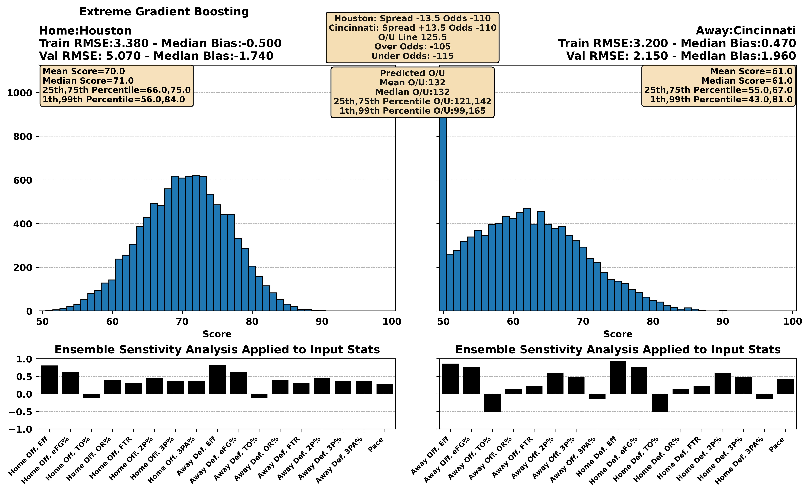
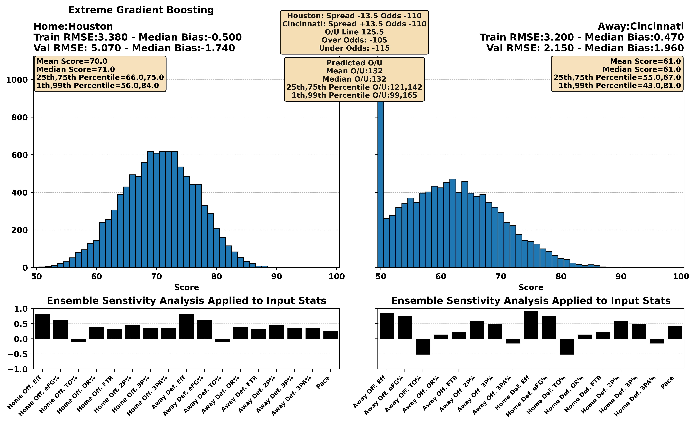
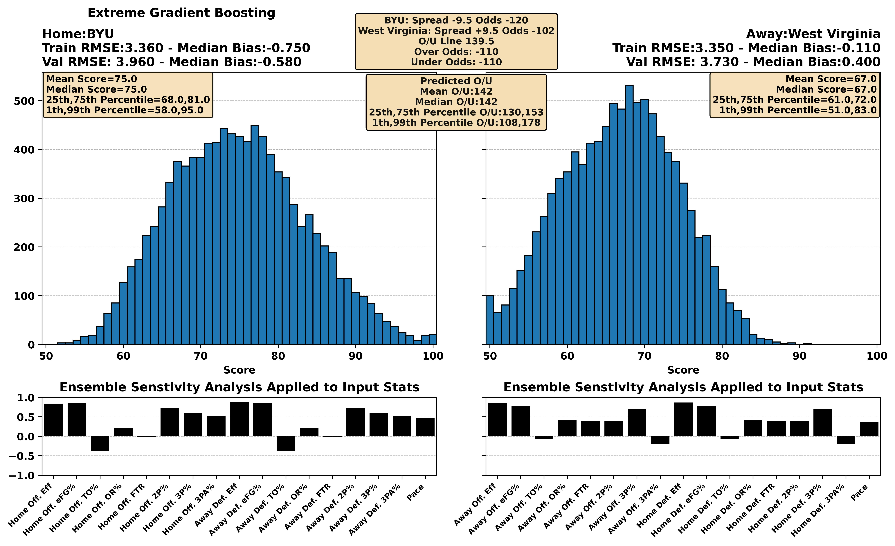
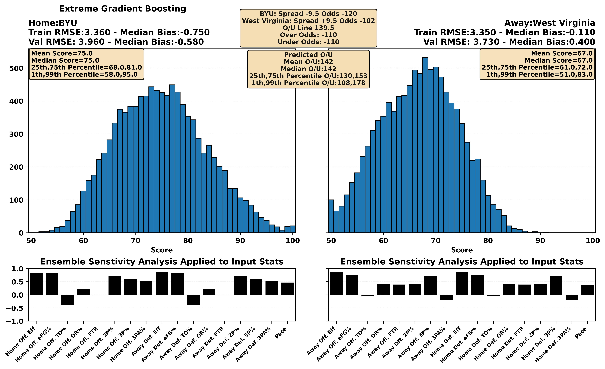
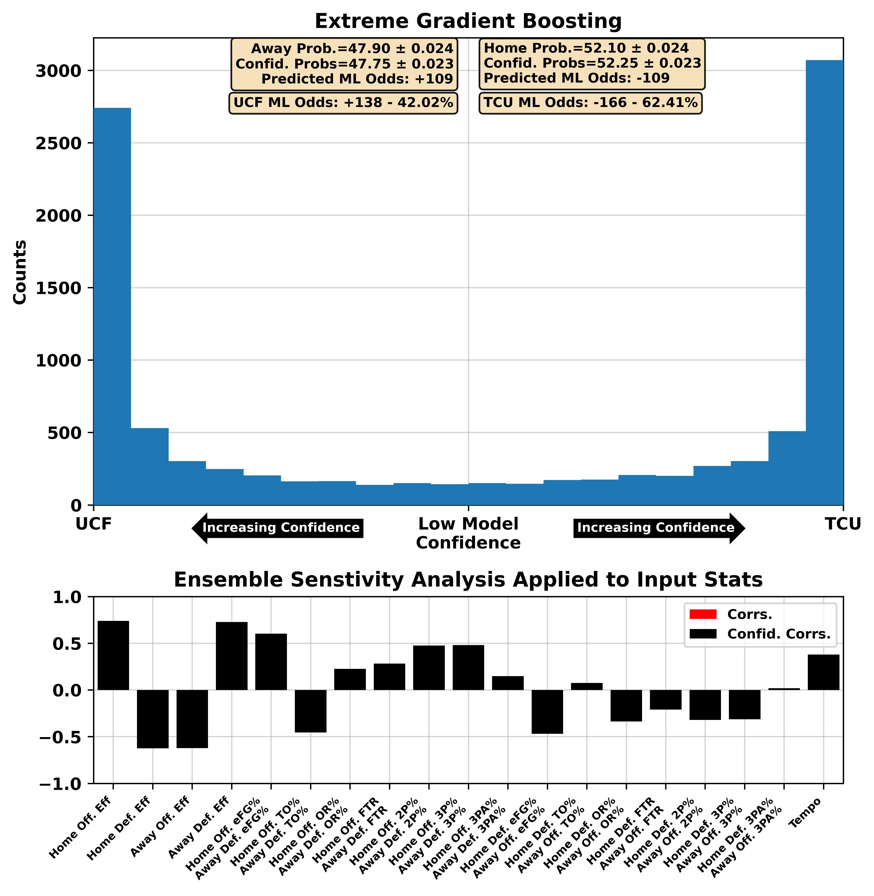
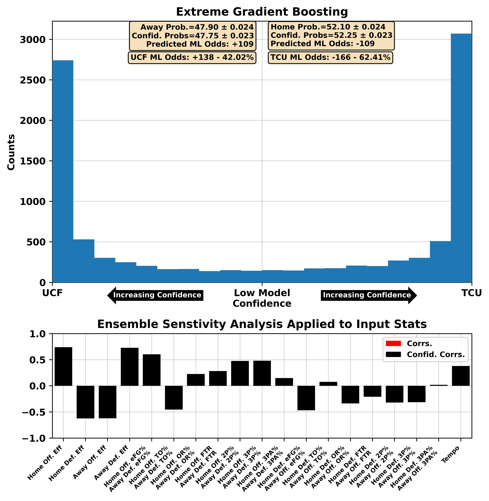

| BART Torvik Prediction | 12:00 PM 3 Auburn at 20 Kentucky ABC | Auburn -5.0, 86-81 (66%) |


| BART Torvik Prediction | 03:00 PM 5 Alabama at 6 Tennessee ESPN | Tennessee -3.4, 78-74 (62%) |
 



| BART Torvik Prediction | 08:00 PM 8 Arizona at 14 Iowa St. ESPN | Iowa St. -2.1, 77-74 (58%) |


| BART Torvik Prediction | 01:00 PM 7 Texas Tech at 23 Kansas ESPN | Kansas -1.1, 71-70 (55%) |


| BART Torvik Prediction | 05:00 PM 9 Missouri at 34 Vanderbilt SEC Network | Missouri -2.4, 83-81 (58%) |


| BART Torvik Prediction | 03:30 PM 29 Creighton at 46 Xavier FOX | Xavier -1.6, 75-73 (56%) |


| BART Torvik Prediction | 10:00 PM 12 Gonzaga at 64 San Francisco ESPN | Gonzaga -4.3, 78-74 (66%) |


| BART Torvik Prediction | 07:00 PM 35 Georgia at 47 Texas ESPN2 | Texas -2.4, 72-70 (60%) |


| BART Torvik Prediction | 03:30 PM 44 Cincinnati at 1 Houston CBS | Houston -15.1, 69-54 (94%) |
 

 

| BART Torvik Prediction | 09:00 PM 33 West Virginia at 15 BYU ESPN2 | BYU -7.0, 72-65 (76%) |


 

| BART Torvik Prediction | 03:00 PM 69 UCF at 74 TCU ESPN+ | TCU -3.3, 76-73 (63%) |

 


| BART Torvik Prediction | 07:30 PM 25 Texas A&M at 4 Florida SEC Network | Florida -8.9, 77-68 (80%) |


| BART Torvik Prediction | 11:00 AM 13 Maryland at 71 Penn St. BTN | Maryland -5.7, 81-76 (70%) |